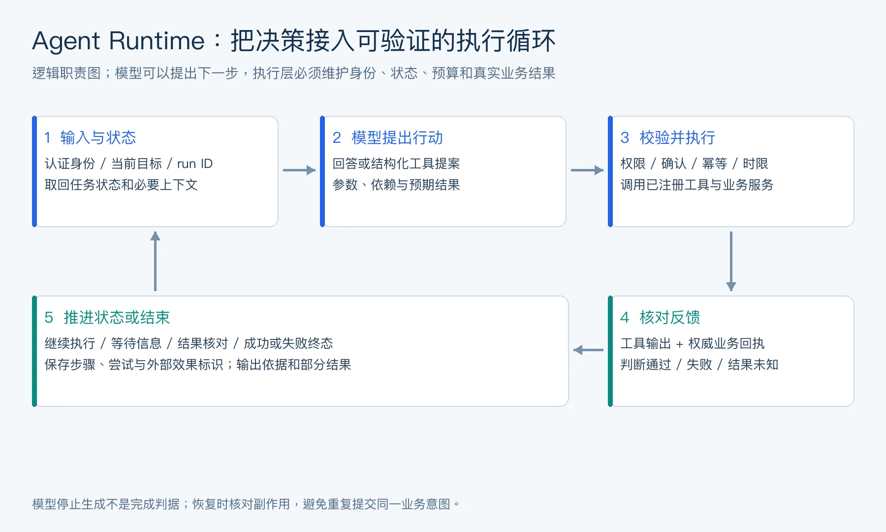
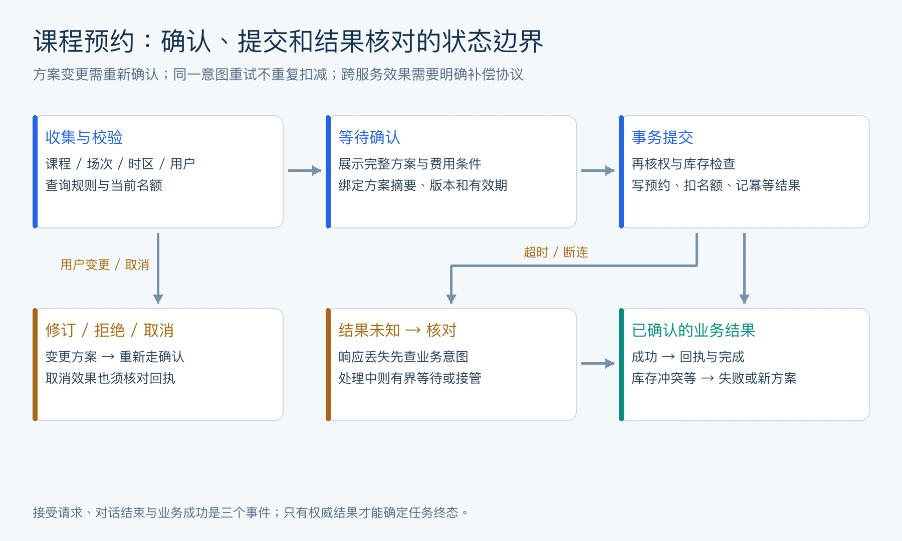

企业级平台与产品落地
平台化、权限、KPI、落地路径（37 题）
主题· 1. 企业级 Agent 平台的本质是什么？
平台复用能力与单个应用目标应如何区分？
难度评分：⭐⭐⭐⭐ (4/5) | 考察频率：⭐⭐⭐⭐ (4/5)
企业级 Agent 平台不是“做一个聊天机器人”，也不是“给模型接几个工具”。它的本质是为企业内部大量 Agent 应用提供统一的构建、运行、治理和运营基础设施。
它要解决的问题包括：
- 谁可以创建 Agent。
- Agent 可以使用哪些模型。
- Agent 可以调用哪些工具。
- Agent 可以访问哪些数据。
- Agent 的会话、任务、记忆如何保存。
- Agent 如何接入企业系统。
- Agent 如何评测、发布、灰度、回滚。
- Agent 如何被审计、监控、计费。
- Agent 之间如何协作和复用。
可以把企业 Agent 平台理解为：
面试中可以总结：企业级 Agent 平台的核心目标不是让单个 Agent 更炫，而是让企业能够安全、可控、可复用、可规模化地生产和运营 Agent。
Agent 平台和单个 Agent 应用有什么区别？
难度评分：⭐⭐⭐⭐ (4/5) | 考察频率：⭐⭐⭐⭐ (4/5)
| 维度 | 单个 Agent 应用 | 企业级 Agent 平台 |
|---|---|---|
| 目标 | 解决一个具体场景 | 支撑多个团队和多个场景 |
| 工具接入 | 应用内写死 | Tool Registry / MCP Registry |
| 模型调用 | 单应用配置 | 模型网关统一路由和治理 |
| 权限 | 应用自管 | 企业 IAM / RBAC / ABAC |
| 记忆和数据 | 局部存储 | 多租户隔离、统一存储策略 |
| 评测 | 手工或少量脚本 | Eval Harness + 回归门禁 |
| 发布 | 应用部署 | Agent / Prompt / Tool / Policy 联合版本 |
| 监控 | 日志和错误 | Trace、成本、质量、安全、审计全链路 |
单个 Agent 应用关注“这个 Agent 能不能完成任务”；企业 Agent 平台关注“很多 Agent 能不能持续、合规、稳定地运行”。
为什么企业 Agent 平台需要控制平面？
难度评分：⭐⭐⭐⭐ (4/5) | 考察频率：⭐⭐⭐⭐ (4/5)
控制平面负责管理 Agent 的入口、配置、权限、路由、版本、状态和治理。没有控制平面，每个 Agent 应用都会各自管理工具、凭证、日志、评测和发布，最终变成不可控的影子 IT。
控制平面通常负责：
- Agent 注册和配置。
- 模型供应商和模型版本管理。
- Tool / MCP Server / Agent 服务注册。
- 用户、租户、角色和权限。
- 会话、任务和后台作业管理。
- 安全策略和审批流程。
- 评测集、发布门禁和灰度策略。
- 成本、限流和配额。
- 全链路 tracing 和审计。
数据平面则负责实际执行：
- 模型推理。
- 工具调用。
- RAG 检索。
- 代码执行。
- 浏览器操作。
- 业务 API 调用。
面试中可以说：控制平面决定“能不能做、用什么做、谁来审计”，数据平面负责“真正去做”。
AgentOS、Agent Runtime、Agent Builder、AgentOps 如何区分？
难度评分：⭐⭐⭐ (3/5) | 考察频率：⭐⭐⭐⭐ (4/5)
面试追问：Agent Runtime 的核心职责是什么？
Agent Runtime 是运行一次 Agent 任务的执行核心，管理输入、会话与 run 状态、上下文构造、模型调用、工具分派、超时重试、取消恢复、预算和事件输出。模型决定候选行动，Runtime 决定如何受控地推进这些行动。
Agent Builder 提供任务配置和流程定义；AgentOS 通常指覆盖入口、文件环境、会话及长期运行能力的更大系统；AgentOps 负责评估、监控、发布与事故治理。这些名称没有唯一标准，但职责边界必须在具体架构中说清楚。
Runtime 宜记录 running、waiting_tool、waiting_confirmation、completed、failed、cancelled 等明确状态，给每个 run 建立可追踪标识。并发、断线、进程崩溃和工具副作用不能靠追加一句提示词处理，应由状态存储、执行器和业务接口共同约束。

图 1：一次任务的逻辑控制环。反馈可以触发继续执行、澄清或结束；具体部署可以合并模块，但不能省略状态与结果核验。
一次对话与一次任务不是同一个标识。 conversation_id 关联会话，run_id 关联一次执行，step_id 标记逻辑步骤，attempt_id 标记某次尝试，effect_key 关联同一个业务意图的外部效果。重试会产生新的 attempt，却应复用相同意图的 effect key；用户确实提出另一笔预约时，则应创建新的业务意图。
这些标识使“同一步失败两次”和“提交了两笔不同业务”能够区分。日志、状态快照和工具回执应通过它们关联；单靠时间戳或整段 prompt 的哈希，难以可靠恢复并发任务。
主题· 2. 企业级 Agent 平台通常包含哪些核心模块？
企业 Agent 平台怎样组织控制面与执行面？
难度评分：⭐⭐⭐⭐ (4/5) | 考察频率：⭐⭐⭐⭐ (4/5)
企业级 Agent 平台通常包括：
- Agent Builder
创建和配置 Agent、prompt、工具、知识库、工作流和测试样例。
- Agent Runtime
负责模型调用、工具调用、上下文、状态、streaming、重试、handoff。
- Model Gateway
统一接入 OpenAI、Anthropic、Google、本地模型、企业私有模型。
- Tool / MCP Registry
管理工具、MCP Server、OpenAPI、数据库连接器、浏览器、代码执行器。
- Agent Registry
管理可被复用或 A2A 调用的 Agent 服务。
- Knowledge / RAG Platform
管理文档、索引、切片、向量、重排、权限过滤。
- Memory / Session Store
管理会话、任务状态、长期记忆、用户画像和项目记忆。
- Workflow Engine
支持状态机、DAG、审批、人机协作、重试、补偿、长任务。
- Governance
IAM、RBAC、ABAC、审计、数据分级、敏感信息脱敏、安全策略。
- AgentOps
评测、tracing、监控、灰度、回滚、成本治理、失败样本回流。
Agent Builder 应该提供哪些能力？
难度评分：⭐⭐⭐ (3/5) | 考察频率：⭐⭐⭐⭐ (4/5)
Agent Builder 是给开发者、业务专家或运营人员构建 Agent 的界面或工具。
核心能力：
- Agent 角色和系统指令配置。
- 模型选择和模型路由配置。
- 工具选择和权限配置。
- MCP Server / API 连接。
- 知识库绑定。
- Memory 策略配置。
- Workflow / 多 Agent 编排。
- 输入输出模板。
- 测试样例和模拟运行。
- Trace 调试。
- 发布、版本、回滚。
- 权限审批和分享。
高级能力：
- 自动生成工具 Schema。
- 从 OpenAPI 生成 Tool。
- 从文档生成知识库。
- 从历史工单生成测试集。
- Prompt 版本对比。
- 多模型 A/B 测试。
- 安全策略预检。
面试中要注意：Builder 不应该让业务人员绕过治理。所有工具、模型、知识库和发布都要经过平台权限和评测门禁。
Tool Registry、MCP Registry、Agent Registry 如何分工？
难度评分：⭐⭐⭐ (3/5) | 考察频率：⭐⭐⭐⭐ (4/5)
本节关注 Registry 在企业平台里的资产管理和权限治理；MCP / A2A 的协议字段、能力协商、传输和调用语义，见 《MCP与A2A协议》。
| Registry | 管理对象 | 典型字段 |
|---|---|---|
| Tool Registry | 应用内函数、OpenAPI 工具、内置工具 | 工具名、Schema、风险等级、owner、版本 |
| MCP Registry | MCP Server 和其暴露能力 | server 地址、transport、tools/resources/prompts、认证方式 |
| Agent Registry | 可被复用或远程调用的 Agent | Agent Card、能力、输入输出、SLA、权限、版本 |
分工原则：
- Tool Registry 管“函数级能力”。
- MCP Registry 管“标准工具服务器”。
- Agent Registry 管“能独立完成任务的 Agent 服务”。
企业场景中，这些 registry 需要统一治理：
- owner 和责任人。
- 数据分级。
- 风险等级。
- 权限范围。
- 调用审计。
- 版本管理。
- 可用性监控。
- 下线和回滚机制。
模型网关在 Agent 平台中有什么价值？
难度评分：⭐⭐⭐⭐ (4/5) | 考察频率：⭐⭐⭐⭐ (4/5)
模型网关是企业统一访问多模型的控制层。
核心价值：
- 统一接入多个模型供应商。
- 按任务类型做模型路由。
- 支持 fallback 和重试。
- 统一鉴权和配额。
- 记录 token、成本、延迟。
- 做数据脱敏和安全过滤。
- 控制模型可见的数据范围。
- 支持私有模型和公有模型混用。
- 对模型版本做灰度和回滚。
模型路由策略：
- 简单问答用低成本模型。
- 复杂规划用强推理模型。
- 敏感数据用私有部署模型。
- 结构化抽取用小模型或专用模型。
- 高价值任务使用多模型验证。
面试中可以说：模型网关让企业避免“每个 Agent 直接连不同模型 API”，从而统一成本、安全、合规和可观测性。
会话、任务、记忆、知识库为什么要分开管理？
难度评分：⭐⭐⭐⭐ (4/5) | 考察频率：⭐⭐⭐⭐ (4/5)
面试追问：为什么选择 MongoDB、PostgreSQL、Redis 这样的存储组合？各自保存什么数据？
这类组合是一种工程选择，不是 Agent 项目的标配。MongoDB 可保存灵活结构的会话事件与工具记录；PostgreSQL 适合事务业务、明确字段、版本约束，也可承载 pgvector 与全文检索；Redis 适合短期缓存、限流、临时会话和有明确恢复语义的协调数据。
会话记录描述发生过什么，任务状态描述执行到哪里，记忆保存可复用信息，知识库保存外部业务证据，预约表保存权威业务结果。应明确每类数据的唯一权威写入点，避免同一事实在三个库里都可修改。
缓存失效、跨库一致性、删除传播、备份与故障恢复会增加成本。早期系统可先使用 PostgreSQL 加必要缓存，只有查询模式、规模或组织能力支持时才拆库。Redis 中的临时确认与锁不能替代持久化预约事务或可靠的幂等记录。
用户意图识别怎么做？规则匹配、LLM 判断和混合方案怎么选？
难度评分：⭐⭐⭐ (3/5) | 考察频率：⭐⭐⭐⭐ (4/5)
先定义意图集合、槽位和拒识条件，再选识别方法。规则适合明确命令、固定格式和高精度入口；LLM 适合表达多样、隐含意图及上下文依赖；混合方案通常先匹配高精度规则，再让模型处理长尾表达，最后用代码校验结构和业务约束。
输出宜包含 intent、slots、needs_clarification、evidence，不要让模型生成任意处理器名称。多意图请求应拆解或澄清；“帮我查一下预约”与“帮我预约”必须区分。模型自报的置信度未经校准，不能直接作为放行写操作的概率。
评测除总体准确率外，还看每类召回、混淆矩阵、未知意图拒识和高风险误路由率。漏掉一次查询与误提交一次订单的代价不同，阈值要按风险配置。真正的用户身份来自认证上下文，不从用户文本中提取后直接信任。
意图识别完成后，怎么把请求路由到不同的业务处理器？
难度评分：⭐⭐⭐ (3/5) | 考察频率：⭐⭐⭐⭐ (4/5)
将识别结果映射到服务端白名单注册表：意图对应处理器、参数 Schema、所需权限、可重试类型和超时。路由器验证意图枚举和槽位，随后调用已注册处理器；模型生成的字符串不能直接变成类名、脚本或 URL 执行。
例如 knowledge_query 进入检索流程，booking_query 进入只读业务查询，booking_create 进入收集—校验—确认—提交状态机。处理器接收受信任的 tenant_id、user_id、request_id，这些字段不能被模型参数覆盖。
未知意图进入澄清，多意图通过明确依赖编排。返回结果用统一状态和错误码区分成功、可重试、待补信息与拒绝。路由 trace 应记录规则/模型版本、选定处理器和执行结果，方便定位“识别对了却调错服务”的问题。
Agent 怎么调用 Spring Cloud 微服务？统一网关和 Nacos 在链路里分别起什么作用？
难度评分：⭐⭐⭐⭐ (4/5) | 考察频率：⭐⭐⭐ (3/5)
Agent 通过受控工具适配层调用 Spring Cloud 微服务，模型只填写允许的业务参数，适配器注入认证信息、链路标识、超时和幂等键。统一网关可承担路由、认证接入、限流与观测；业务服务仍负责资源级授权和事务，不因请求经过网关就跳过检查。
Nacos 提供服务发现与配置管理能力：服务注册后，客户端或网关可按配置发现可用实例。它通常不承载每次业务请求的数据转发，也不负责模型规划或代替网关执行鉴权。具体链路取决于使用的 Spring Cloud 与服务发现集成方式。
例如预约工具调用预约服务，服务事务校验场次并写入结果；超时后按幂等键查询，不把网关重试和 Runtime 重试叠加成多次提交。对模型可选目标采用服务白名单，禁止它自行生成任意内网 URL。配置更新同样需要版本、灰度和审计。
主题· 3. 企业 Agent 平台如何做多租户和权限治理？
多租户平台应怎样建立身份与资源边界？
难度评分：⭐⭐⭐⭐ (4/5) | 考察频率：⭐⭐⭐⭐ (4/5)
企业平台必须支持多租户、多部门、多角色和多数据域。Agent 的权限治理比普通应用更复杂，因为 Agent 既代表用户行动，又有自己的工具、记忆、策略和运行环境。
关键治理对象：
- 用户。
- 租户。
- 部门。
- Agent。
- 工具。
- 数据源。
- 知识库。
- 记忆。
- 会话。
- 工作流。
- 模型。
- 外部系统凭证。
权限判断不应只问“用户有没有权限”，还要问：
- 当前 Agent 有没有权限？
- 当前任务有没有权限？
- 当前工具有没有权限？
- 当前参数是否越界？
- 当前环境是否允许？
- 是否需要审批？
RBAC、ABAC、租户隔离在 Agent 中如何落地？
难度评分：⭐⭐⭐ (3/5) | 考察频率：⭐⭐⭐⭐ (4/5)
| 机制 | 作用 | Agent 场景 |
|---|---|---|
| RBAC | 基于角色授权 | 运营可创建客服 Agent，研发可使用代码工具 |
| ABAC | 基于属性授权 | 数据等级、部门、地域、时间、任务风险共同判断 |
| Tenant Isolation | 租户隔离 | 不同客户的数据、记忆、trace、工具配置互不可见 |
落地建议：
- RBAC 管基础角色和平台操作。
- ABAC 管细粒度数据和工具访问。
- 租户隔离管数据边界。
- 高风险工具加审批流。
- 所有工具调用带 user_id、agent_id、tenant_id、task_id。
- RAG 和 Memory 检索前先做权限过滤。
- Trace 和日志也要按租户隔离。
例子：用户是财务经理，有权查看财务数据；但一个客服 Agent 即使由该用户启动，也不应自动继承全部财务权限，除非任务、工具和审批都满足条件。
Agent 身份和用户身份为什么要分开？
难度评分：⭐⭐⭐ (3/5) | 考察频率：⭐⭐⭐⭐ (4/5)
用户身份代表“谁发起任务”，Agent 身份代表“哪个自动化主体在执行”。二者必须分开，否则会出现权限放大。
分开的原因：
- 同一用户可以启动不同风险等级的 Agent。
- 同一 Agent 可被多个用户使用。
- Agent 应有自己的工具范围和凭证。
- 审计需要知道是用户手动操作还是 Agent 自动操作。
- 企业需要限制 Agent 不能继承用户所有权限。
推荐做法：
- 每次工具调用携带 user_id 和 agent_id。
- Agent 使用 scoped credential。
- 高风险操作使用 on-behalf-of 模式并要求用户确认。
- 审计日志同时记录用户、Agent、任务和工具。
- Agent 权限默认小于等于用户权限。
一句话：用户授权不等于 Agent 可自动行动，Agent 身份是企业控制自动化风险的关键边界。
企业私有化部署需要考虑哪些问题？
难度评分：⭐⭐⭐ (3/5) | 考察频率：⭐⭐⭐⭐ (4/5)
私有化部署不仅是“把服务装到客户内网”，还包括数据、模型、工具、运维和合规全链路。
需要考虑：
- 模型部署：公有 API、私有模型、混合路由。
- 数据不出域：文档、代码、数据库、trace、记忆。
- 身份集成：SSO、LDAP、OIDC、企业 IAM。
- 网络边界：内网访问、VPC、专线、代理。
- 工具接入：数据库、工单、知识库、Git、IM、邮件。
- 审计合规：日志保留、脱敏、访问追踪。
- 算力资源：GPU、CPU、队列、弹性伸缩。
- 版本升级：离线包、灰度、回滚、兼容性。
- 安全扫描：镜像、依赖、MCP Server、插件。
- 运维交付：监控、告警、备份、灾备。
私有化场景的难点往往不是模型推理，而是客户系统集成和权限治理。
如何设计 Agent Marketplace / Skill Marketplace？
难度评分：⭐⭐⭐⭐ (4/5) | 考察频率：⭐⭐⭐ (3/5)
本节从企业平台治理角度讨论 Marketplace 的上架、审核、权限和下架；Skill 在长期运行 Agent 中如何被自动评分、合并、归档和回滚，见 《自进化Agent与多平台运行时》。
Agent Marketplace 管可复用 Agent，Skill Marketplace 管可复用能力包或流程。
核心字段：
- 名称和描述。
- 适用场景。
- owner 和维护团队。
- 输入输出。
- 所需工具和数据权限。
- 风险等级。
- 版本。
- 示例任务。
- 评测结果。
- 安全审核状态。
- SLA 和支持方式。
上架流程：
- 提交 Agent / Skill。
- 自动检查元数据、依赖、权限。
- 运行安全评测和功能评测。
- 人工审核高风险能力。
- 灰度给小范围用户。
- 收集反馈和 trace。
- 正式发布。
下架机制同样重要：
- owner 失联。
- 工具依赖失效。
- 评测回归。
- 安全风险。
- 成本过高。
- 业务规则过期。
Marketplace 的核心不是数量，而是可信、可评测、可治理。
主题· 4. 企业 Agent 从 PoC 到生产落地有哪些阶段？
业务场景从试验到生产需要哪些验收阶段？
难度评分：⭐⭐⭐ (3/5) | 考察频率：⭐⭐⭐⭐ (4/5)
推荐阶段：
- 场景筛选
选择高频、低风险、可评估、有明确 ROI 的场景。
- PoC
用有限数据和工具验证可行性。
- Pilot
小范围真实用户试用，收集失败样本和反馈。
- 受控生产
接入权限、审计、评测、监控、灰度，限制自动化边界。
- 规模化
扩展到更多团队、更多工具、更多场景。
- 平台化
沉淀工具、知识库、评测、模板、Agent 和 Skill 市场。
每个阶段的目标不同：PoC 验证“能不能做”，Pilot 验证“用户愿不愿用”，生产验证“能不能稳定安全地做”，平台化验证“能不能规模化复用”。
客服 Agent、数据分析 Agent、编码 Agent、办公 Agent 如何对比？
难度评分：⭐⭐⭐ (3/5) | 考察频率：⭐⭐⭐⭐ (4/5)
| 场景 | 核心价值 | 主要风险 | 关键能力 |
|---|---|---|---|
| 客服 Agent | 降低响应成本，提高一致性 | 错误承诺、隐私泄露 | 政策 RAG、工单工具、转人工 |
| 数据分析 Agent | 降低取数和分析门槛 | 越权查询、错误结论 | SQL、BI、数据权限、图表 |
| 编码 Agent | 研发提效 | 改错文件、引入回归 | 仓库理解、测试、diff、CI |
| 办公 Agent | 自动化知识工作 | 误发邮件、日程冲突 | 邮件、日历、文档、审批 |
落地难度通常取决于：
- 任务是否可验证。
- 工具副作用是否可控。
- 数据权限是否清晰。
- 用户是否能审查结果。
- 失败成本是否可接受。
最适合早期落地的是“只读 + 建议 + 人审”的场景，比如知识库问答、客服回复建议、代码 review、数据报告草稿。
低代码 Agent 平台适合什么场景，不适合什么场景？
难度评分：⭐⭐⭐⭐ (4/5) | 考察频率：⭐⭐⭐⭐ (4/5)
适合：
- 知识库问答。
- 客服机器人。
- 表单收集和简单流程。
- 内容生成。
- 内部助手。
- 快速 PoC。
- 业务人员维护话术和流程。
不适合：
- 高复杂状态机。
- 深度代码仓库操作。
- 高风险生产写操作。
- 强定制工具链。
- 复杂权限和多租户隔离。
- 需要严格评测和回滚的核心业务。
低代码平台的价值是降低构建门槛，但不能替代工程治理。真正生产级的 Agent 仍然需要权限、安全、评测、观测和版本管理。
如何评估一个 Agent 场景是否值得做？
难度评分：⭐⭐⭐ (3/5) | 考察频率：⭐⭐⭐⭐ (4/5)
可以从八个维度评估：
| 维度 | 判断问题 |
|---|---|
| 频率 | 任务是否高频重复？ |
| 价值 | 自动化后能节省多少时间或提升多少收入？ |
| 可验证性 | 结果是否容易判断对错？ |
| 风险 | 失败是否可接受、可回滚？ |
| 工具完备性 | Agent 是否能拿到必要工具和数据？ |
| 权限清晰度 | 数据和动作权限是否明确？ |
| 人审成本 | 人类能否快速审核结果？ |
| 数据可用性 | 是否有历史样本和评测集？ |
优先做：
- 高频、低风险、可验证、工具齐全的任务。
- 人类审核成本低的任务。
- 已有 SOP 的任务。
- 能从历史数据构造评测集的任务。
慎重做：
- 低频高风险任务。
- 结果难验证任务。
- 需要大量主观判断的任务。
- 权限边界不清的任务。
Agent 产品如何设计 Human-in-the-loop？
难度评分：⭐⭐⭐⭐ (4/5) | 考察频率：⭐⭐⭐⭐ (4/5)
面试追问：课程预约这类多轮业务怎么设计？信息收集、校验、确认和执行怎么衔接？
用显式状态机组织多轮业务：收集课程、日期和必要身份信息 → 规范化时区与字段 → 查询规则与名额 → 展示完整方案 → 用户确认 → 重新校验并事务提交 → 返回回执。拒绝、取消、信息变更与异常也必须有明确转移。
确认对象应包含课程、场次、时间、地点、价格或费用条件、用户与方案版本，并有有效期。用户改了时间后，旧确认应失效；“好的”只有在明确且仍有效的待确认上下文中才可解释为提交许可。不要把过去偏好当成这次预约授权。
后端用幂等键防止重试重复写入，通过事务、唯一约束或并发控制保障库存；确认后名额仍可能被抢占，因此提交时需再次检查。响应丢失后先查结果再决定补偿。预约状态、对话状态和工具状态分别核对，模型最终措辞必须依据业务回执。

图 6：成功必须由业务回执确认。超时进入结果核对；库存冲突、方案变更和用户取消各有明确后续状态。
幂等记录和库存变更应一起设计。 对同一业务意图，服务端保存请求摘要与结果；相同幂等键但不同参数应拒绝。通过唯一约束和事务处理并发请求，保证预约落库、名额扣减及幂等结果在同一业务事务中一致提交，或采用具有等价约束的可靠协议。
若不同服务分别管理支付、名额和通知，就不能再声称一个数据库事务包住全部效果。需要定义预占、提交、释放与补偿规则，并区分业务成功与通知失败。用户取消也不意味着先前的外部操作已经撤销，系统应返回可核验的取消状态。
测试应覆盖两个客户端同时提交同一意图、同键不同参数、名额耗尽、确认过期、提交成功但响应丢失、提交期间取消，以及事务回滚后库存是否恢复。这样的用例验证的是业务边界，LLM 输出流畅与否无法替代它们。
主题· 5. 企业 Agent 平台如何控制成本、延迟和稳定性？
平台的性能、费用与可靠性如何共同约束？
难度评分：⭐⭐⭐⭐ (4/5) | 考察频率：⭐⭐⭐⭐ (4/5)
企业 Agent 平台的成本和延迟比普通 LLM 应用更难控制，因为 Agent 会多轮调用模型和工具。
治理手段：
- 模型路由。
- token 预算。
- 工具调用预算。
- 上下文压缩。
- RAG 缓存。
- 工具结果缓存。
- 并行工具调用。
- 任务队列。
- 异步后台任务。
- fallback 模型和工具。
- 超时和熔断。
- 成本看板和租户配额。
平台要为每个 Agent、租户、用户和任务类型统计成本，让业务方知道 ROI。
Agent 平台如何做模型路由和成本治理？
难度评分：⭐⭐⭐⭐ (4/5) | 考察频率：⭐⭐⭐⭐ (4/5)
面试追问：大小模型怎么分工？哪些任务适合小模型，哪些需要更强的模型？
大小模型按任务难度、上下文、风险与可验证性分工。意图分类、字段抽取、规则明确的改写、短摘要等可先评估较小模型；复杂规划、多证据冲突处理、代码修复或长上下文综合可能需要更强模型。规则足够明确的步骤直接用程序。
升级可由缺字段、输出不合法、证据不足、验证失败或任务类别触发。模型自报“很有信心”未经校准，不足以决定是否跳过升级。高风险业务无论使用哪种模型，都要走相同授权和确定性检查。
用同口径任务集测成功率、升级率、端到端成本与延迟，包括小模型失败后再次调用大模型的开销。路由器本身也会出错，保留回退与审计。团队应优化单位成功任务的成本，而不是追求小模型调用占比。
Agent 平台如何设计发布、灰度和回滚？
难度评分：⭐⭐⭐⭐ (4/5) | 考察频率：⭐⭐⭐⭐ (4/5)
本节关注平台如何把发布能力产品化，例如版本包、灰度维度、回滚开关和状态兼容；AgentOps 视角下的评测门禁、失败回流和事故响应，见 《Agent安全评测与AgentOps》。
Agent 发布对象包括：
- prompt。
- model。
- tool schema。
- MCP Server。
- workflow。
- memory policy。
- guardrail policy。
- skill。
- RAG index。
- permission policy。
发布流程：
- 版本打包。
- 运行 smoke eval。
- 运行 regression eval。
- 安全策略扫描。
- 小流量灰度。
- 指标监控。
- 扩大灰度或回滚。
灰度维度：
- 用户。
- 租户。
- 团队。
- 场景。
- 工具权限。
- 模型版本。
回滚要求：
- 记录每次任务使用的版本组合。
- 保留旧版本 prompt、工具和策略。
- 工作流状态向前/向后兼容。
- 外部副作用有补偿方案。
- RAG index 和 Memory 策略可版本化。
Agent 平台如何建设可观测性和审计？
难度评分：⭐⭐⭐⭐ (4/5) | 考察频率：⭐⭐⭐⭐ (4/5)
本节关注企业平台需要提供的可观测性与审计产品能力；trace 里具体应该记录什么、如何定位失败、如何做 LLM-as-Judge 与失败样本回流，见 《Agent安全评测与AgentOps》。
可观测性关注运行质量，审计关注责任追踪。
可观测性：
- 请求量。
- 任务成功率。
- 工具成功率。
- 平均延迟和 P95/P99。
- token 和费用。
- 人工接管率。
- 失败分类。
- guardrail 拦截率。
- 用户满意度。
审计：
- 谁发起任务。
- 哪个 Agent 执行。
- 使用哪个模型和 prompt。
- 调用哪些工具。
- 访问哪些资源。
- 权限如何批准。
- 是否产生外部副作用。
- 最终交付是什么。
企业平台应支持：
- Trace 链路查询。
- 按租户和用户过滤。
- 敏感字段脱敏。
- 日志保留策略。
- 审计导出。
- 安全告警。
Agent 平台如何支持长任务和后台任务？
难度评分：⭐⭐⭐⭐ (4/5) | 考察频率：⭐⭐⭐⭐ (4/5)
长任务需要任务系统，而不是只依赖同步对话。
核心能力：
- Task id。
- 状态机：queued、running、waiting_approval、succeeded、failed、cancelled、timeout。
- 任务队列。
- 断点恢复。
- 超时和取消。
- 进度事件。
- 后台通知。
- 人工审批。
- 结果归档。
- 幂等 key。
适合后台任务的场景：
- 长文档分析。
- 代码仓库扫描。
- 数据报表生成。
- 多网页调研。
- 批量工单处理。
- 视频、图片、音频处理。
面试中可以说：企业 Agent 平台必须从“请求-响应”架构升级到“任务-事件-状态”架构。
主题· 6. 当前主流 Agent 平台和框架如何分类选型？
企业 Agent 产品与开发框架应如何分类？
难度评分：⭐⭐⭐ (3/5) | 考察频率：⭐⭐⭐⭐ (4/5)
可以按定位分类：
| 类型 | 代表 | 适合场景 |
|---|---|---|
| 通用 Agent SDK | OpenAI Agents SDK、Google ADK | 自定义 Agent 应用、多 Agent、工具调用 |
| 工作流 / 状态图 | LangGraph | 复杂流程、长任务、human-in-loop |
| 企业集成框架 | Semantic Kernel | .NET / Java / 企业插件生态 |
| 数据和 RAG Agent | LlamaIndex | 知识库、文档、数据密集型 Agent |
| 多 Agent 协作框架 | AutoGen、CrewAI | 研究探索、角色分工、协作任务 |
| 低代码平台 | Dify、Coze、Copilot Studio | 业务人员快速搭建、客服、知识库 |
| 云厂商 Agent 平台 | Vertex AI Agent Builder、Bedrock Agents、Azure AI Foundry Agent Service | 云上企业集成、托管运行、治理 |
选型关键不是“哪个最火”，而是：
- 是否满足数据和权限要求。
- 是否支持需要的工具生态。
- 是否能接入企业身份系统。
- 是否能评测和观测。
- 是否支持私有化或混合部署。
- 是否能承载长任务和复杂状态。
- 团队是否有维护能力。
OpenAI Agents SDK、LangGraph、Semantic Kernel、Google ADK 如何对比？
难度评分：⭐⭐⭐ (3/5) | 考察频率：⭐⭐⭐⭐ (4/5)
| 框架 | 核心特点 | 更适合 |
|---|---|---|
| OpenAI Agents SDK | Agent、Tool、Handoff、Guardrails、Tracing | 快速构建通用 Agent 和多 Agent handoff |
| LangGraph | 状态图、持久化、人机协作、可恢复流程 | 复杂工作流和长期任务 |
| Semantic Kernel | 企业插件、Planner、与微软生态集成 | 企业系统智能化、.NET/Java 场景 |
| Google ADK | Agent 开发、多 Agent、A2A 生态 | Google/Gemini 生态和服务化 Agent |
选择建议：
- 需要轻量 Agent SDK 和 tracing：OpenAI Agents SDK。
- 需要复杂状态机和 durable execution：LangGraph。
- 企业微软技术栈：Semantic Kernel / Copilot Studio。
- Google 云和 A2A 生态：Google ADK / Vertex AI Agent Builder。
真实项目中也可以组合使用：用 LangGraph 管状态，用 MCP 接工具，用 A2A 接远程 Agent，用模型网关管理多模型。
Dify、Coze、Copilot Studio、Vertex AI Agent Builder、Bedrock Agents 适合什么场景？
难度评分：⭐⭐⭐ (3/5) | 考察频率：⭐⭐⭐⭐ (4/5)
| 平台 | 更适合场景 | 注意点 |
|---|---|---|
| Dify | 私有化、知识库问答、工作流、快速 PoC | 复杂代码 Agent 和强定制需二次开发 |
| Coze | 面向业务和内容场景的 Bot / Agent 快速搭建 | 企业深度治理取决于部署和权限体系 |
| Copilot Studio | 微软 365 / Dynamics / Power Platform 生态 | 适合已在微软生态的企业 |
| Vertex AI Agent Builder | Google Cloud 数据和搜索生态 | 适合 GCP 企业用户 |
| Bedrock Agents | AWS 生态、企业托管 Agent | 适合 AWS 上的业务系统集成 |
选型时要问：
- 数据是否允许进入云平台。
- 是否支持私有化。
- 是否能接企业 IAM。
- 是否支持现有工具和知识库。
- 是否支持评测、trace 和审计。
- 低代码能力能否覆盖业务复杂度。
- 是否存在平台锁定风险。
如何回答“请设计一个企业级 Agent 平台”？
难度评分：⭐⭐⭐ (3/5) | 考察频率：⭐⭐⭐⭐ (4/5)
面试追问：介绍一下你的 Agent 项目：解决什么业务问题，包含哪些核心模块？
项目介绍先讲用户、业务目标和验收标准，再讲模块及一条完整请求。可使用课程服务助手作为练习场景：回答课程规则、查询实时场次、记住经确认的偏好，并在用户确认后提交预约。实际面试应替换成自己真实做过的业务与职责。
核心模块可包括认证入口、意图路由、知识检索、记忆、上下文组装、运行时/状态图、工具适配、业务服务、事件存储、观测和评测。解释清楚模型决策与确定性检查的分界，例如时间表达由模型理解，名额扣减由数据库事务保障。
准备一条成功轨迹、一条失败恢复轨迹和一组有样本数的指标，说明基线、改进及本人负责部分。没有线上数据就报告离线或实验结果，不虚构并发、准确率或商业收益。平台能力可以从复用需求逐步抽象，不必为单个项目先搭庞大平台。
若进一步讨论企业平台，可按入口、Builder、Runtime、共享能力、编排、治理、AgentOps 七层展开。入口接 Web/IM/API，Builder 配任务，Runtime 执行，共享能力提供模型与工具注册、知识及记忆，编排处理依赖和补偿，治理统一身份与资源权限，AgentOps 承担评测、发布、监控与回滚。Agent 身份与用户身份区分，低代码配置不能绕过平台策略；从高价值、低风险、可验证场景逐步开放写操作。
本章高频速记（可直接背）
- 企业 Agent 平台的核心是规模化构建、运行、治理和运营 Agent。
- 单个 Agent 解决具体任务，Agent 平台解决多团队、多场景、多工具的治理问题。
- 控制平面管理配置、权限、路由、版本和审计，数据平面执行模型和工具调用。
- Builder 是入口，Runtime 是执行器，AgentOS 是基础设施抽象，AgentOps 是运营治理体系。
- 企业平台核心模块包括 Builder、Runtime、模型网关、工具注册、Agent 注册、知识库、记忆、工作流和治理。
- Tool Registry 管函数级能力，MCP Registry 管标准工具服务器，Agent Registry 管可复用 Agent 服务。
- 模型网关统一多模型接入、路由、配额、成本、脱敏和审计。
- Session、Task、Memory、Knowledge 必须分开管理。
- Agent 身份和用户身份要分离，避免权限放大。
- Marketplace 的核心不是数量，而是可信、可评测、可治理。
- PoC 验证能不能做，Pilot 验证用户愿不愿用，生产验证是否稳定安全，平台化验证是否可复用。
- 低代码 Agent 平台适合快速 PoC 和标准流程，不适合高风险复杂核心业务的全部治理。
- 企业 Agent 平台必须从请求响应架构升级到任务、事件、状态架构。
- 选型要看数据权限、工具生态、身份集成、评测观测、私有化和团队维护能力。
参考资料
- OpenAI, Agents SDK Documentation.
- LangChain, LangGraph Documentation.
- Microsoft, Semantic Kernel Documentation.
- Google, Agent Development Kit Documentation.
- Google Cloud, Vertex AI Agent Builder.
- Microsoft, Copilot Studio Documentation.
- AWS, Amazon Bedrock Agents Documentation.
- Dify, Documentation.
- Coze, Documentation.
- LlamaIndex, Documentation.
- AutoGen, Documentation.
- CrewAI, Documentation.
- Spring Cloud Gateway
- Nacos 服务发现与配置概览